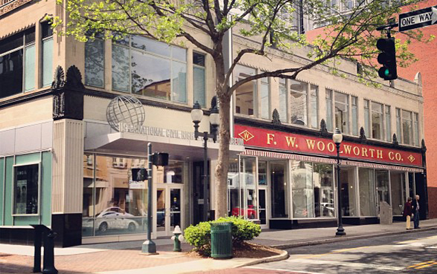

Hello and welcome to The GSO Web Initiative. This initiative was created by Seth Hall of Middle8Media. Thanks for stopping by hope you'll join us on this great adventure.
The GSO Web Initiative was established in 2012 with a vision to beautify the great city of Greensboro, NC one website at a time. Our mission is to improve the cities online presence while raising the bar of what is an acceptable representation of our city on the web. Greensboro, NC is one of the state's most vibrant epicenters of the creative arts and home to an eclectic group of businesses. In this web centered culture we believe that Greensboro's online presence should reflect that. Our mission is the make sure it does.

While perusing the internet & exploring local businesses, we noticed a high number of websites that were out of date and buggy and let's face it, compared to how Greensboro is in real life, kind of boring.
Our philosophy is that every business in the We kept Our vision is that when anyone visit a site for greensboro, they are blown away by the vibrancy, photography, graphics etc...We want to change that
We lovingly love and frequently frequent Elm Street and as the heart of downtown Greensboro and host to many of the cities premiere businesses, it only made sense for The Greensboro Web Initiative to start here and work it's way out.
What would our fair city be without the great street that is Tate Street. Home to many a great stomping grounds and college haunts, The Greensboro Web Initiative considers Tate Street essential to the beautifying of our city's presence on the web.
We haven't gotten this far yet, but we are open to suggestions for the next initiative location . Do you have a suggestion? If so, please contact us and let us know.
JOIN THE INITIATIVE
As strong believers of community and collaboration we need your involvement in this initiative. If you are a business who want to get involved please contact us and tell us about your business. We promise to create a top level website for you and an affordable cost, saving you money
JOIN THE INITIATIVE
Are you a local web designer/developer, graphic artist, illustrator or photographer who wants to join this initiative? Please contact us so we can discuss.